Odoo 18PortalHR & Payroll
Employee Self-Service Portal
Production employee portal serving 250+ employees across four branches
TTI Testing Laboratories · 2026
PythonOdoo ORMJavaScriptQWeb
View case study →18
24 delivered projects: custom modules, OWL front-ends, payment gateways, Sage and REST API integrations, BOM versioning, HR automation and version migrations. Each one has scope, modules, stack and outcomes.
Production employee portal serving 250+ employees across four branches

Full-stack OWL attendance and leave analytics for 250+ employees across four branches

Portal-based field sales operations for ~15–20 reps and 5–7 managers without internal-user seats
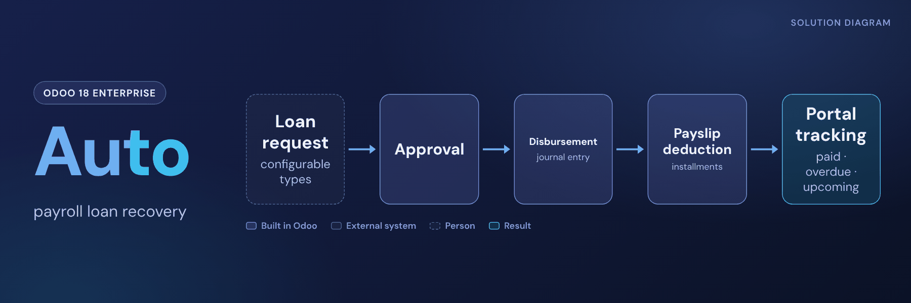
End-to-end employee loans, accounting, payroll deductions, OWL analytics and self-service
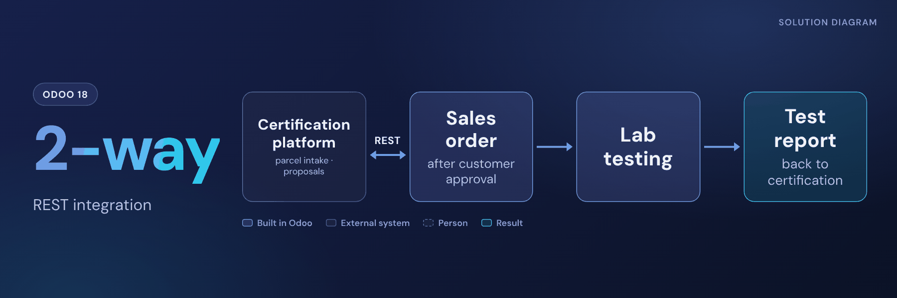
Bidirectional Odoo integration connecting parcel intake, testing proposals, sales orders, reports and certification

Doctor portal, advance payments, MRP and Inventory processing ~250 daily orders

Website, GoHighLevel and form leads routed into Odoo CRM with deduplication and automatic assignment
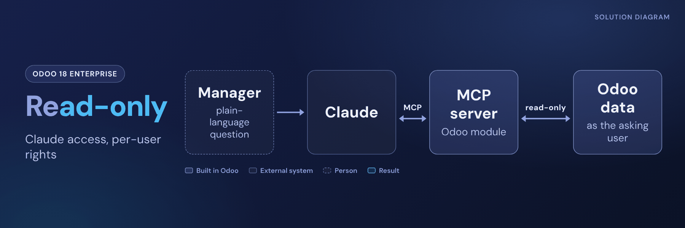
Lets management ask Claude plain-language questions about sales, receivables, attendance and payroll
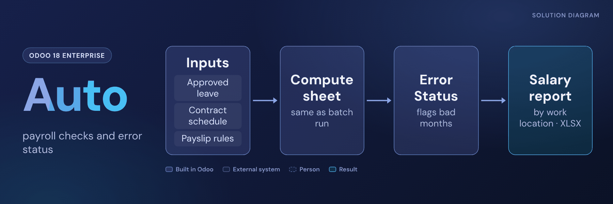
Payslip day-count fixes, error status, dynamic deduction columns and a grouped salary report
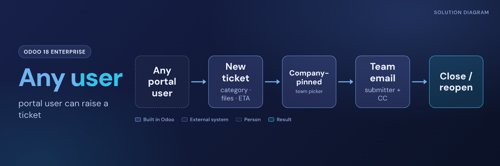
Portal ticketing for IT support with categories, attachments, team notifications and close/reopen
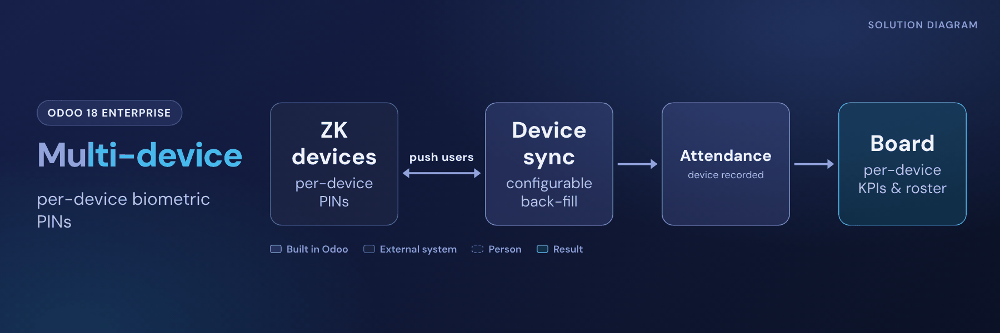
ZK biometric devices with per-device PINs, device-level KPIs and user push/update/delete

API-key REST API for products and orders, plus a chatbot module exposing business data to a partner
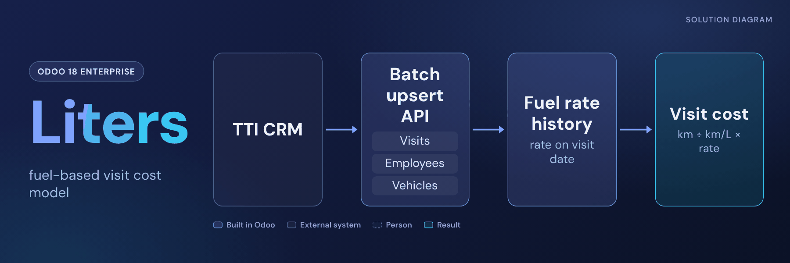
Bridge that receives visit data from the CRM, with vehicle rates and a liters-based cost model
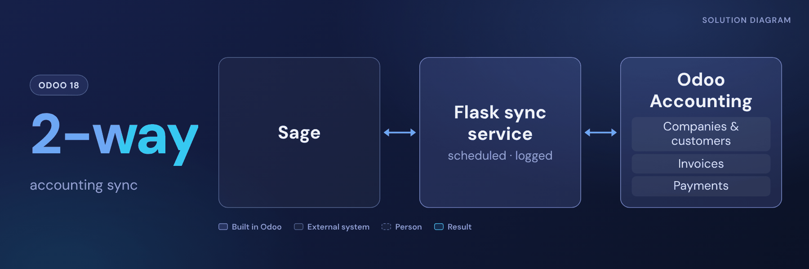
Two-way sync of companies, customers, invoices and payments between Sage and Odoo
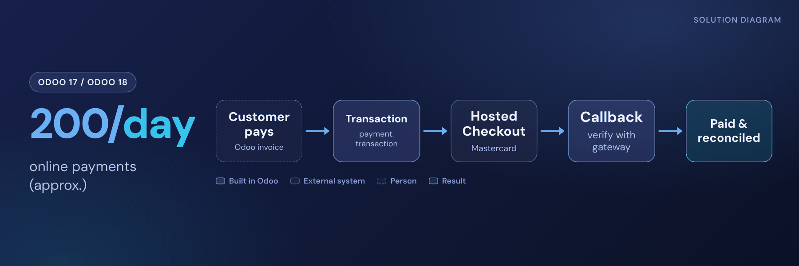
End-to-end Odoo payment provider handling ~200 online payments per day
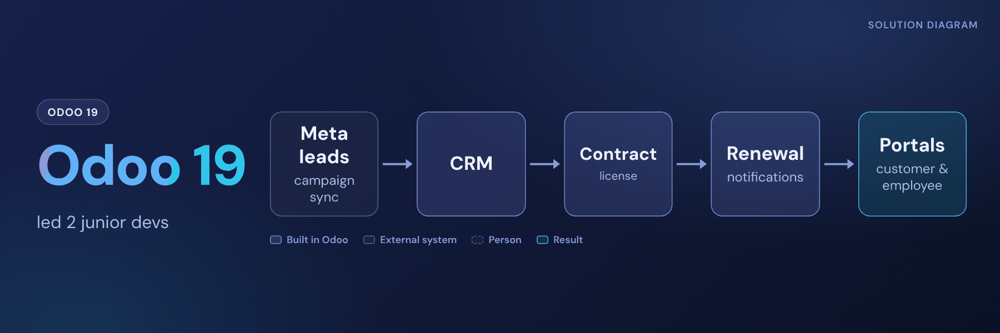
Odoo 19 CRM, Meta lead sync, contracts, renewals and portals led with two junior developers
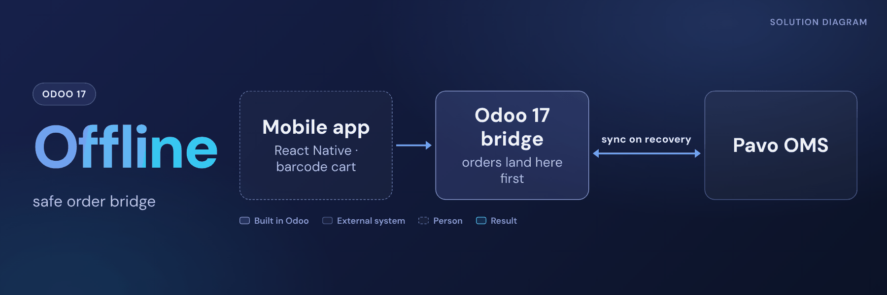
React Native ordering app with Odoo 17 as a resilient bridge to Pavo OMS

Independent end-to-end Odoo 18 ERP delivery from business modules through production infrastructure
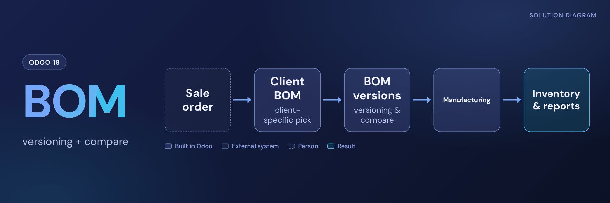
Manufacturing, BOM versioning/comparison, Sales, Inventory and custom reporting
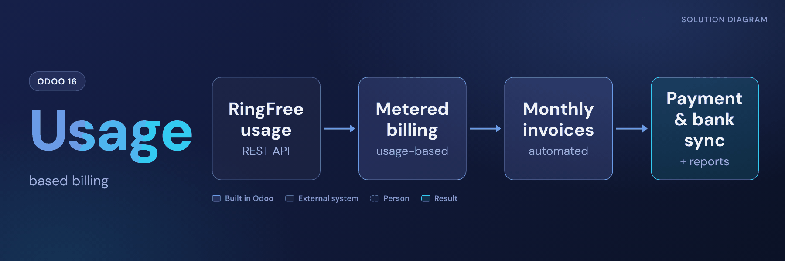
REST integration for usage-based billing, monthly invoices, payments and reporting
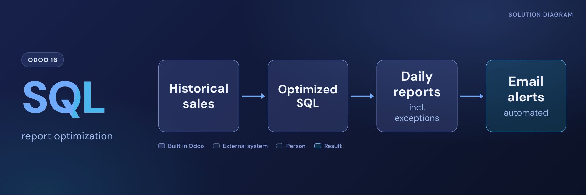
Sales reporting, daily operational reports, automated notifications and SQL optimization
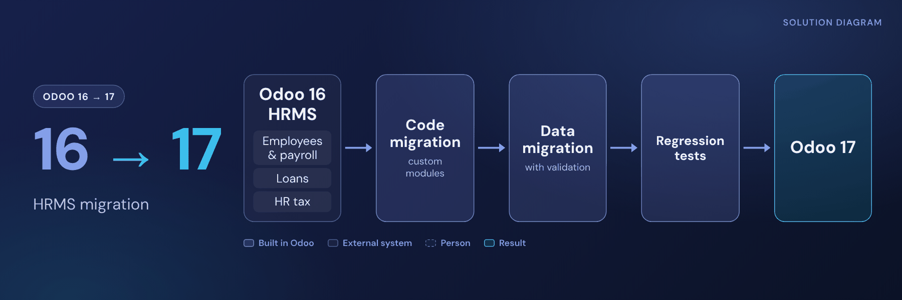
Employees, Payroll, Loans and HR Tax migration from Odoo 16 to 17

Cross-platform React Native shopping app with Django/Firebase backend

Kotlin/Firebase collaboration app for investors and idea pitchers
No projects match. Try another filter.
Tell me about your workflow and Odoo version, and I will tell you how I would approach it.